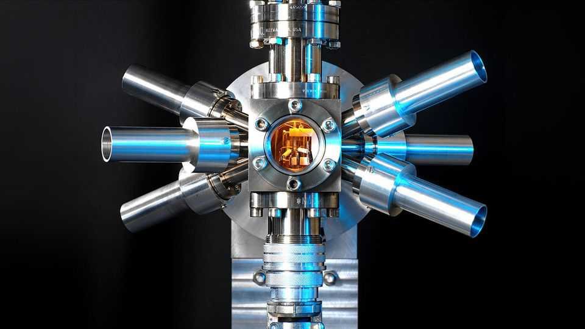

The second may soon be redefined
Several atomic clocks are competing for the job

Oct 22nd 2026
IT TAKES ABOUT a second to say “caesium atoms”. And, for nearly 60 years, caesium atoms have said how long a second lasts. That is because caesium-133, an isotope of caesium, switches between two energy states when exposed to microwave radiation, at a rate so regular you could set your watch by it. Indeed, atomic clocks use this steady rhythm to measure time. According to the International System of Units, a second is 9,192,631,770 cycles.
But not for much longer. On October 13th the world’s top metrologists convened in Versailles for the General Conference on Weights and Measures (CGPM), as they have done roughly once every four years since 1889, to discuss the science of measurement. After three days of debate, they set themselves a deadline: by 2030 they will decide how to redefine the second.
The CGPM oversees the International Bureau of Weights and Measures (BIPM), which sets the global standard for the passage of time. It does so by combining measurements from hundreds of atomic clocks based in laboratories around the world, to account for small fluctuations which can cause errors in each individual reading. The result is a single standardised time that co-ordinates everything from financial transactions to satellite navigation.
But the BIPM has a problem. To check the accuracy of its standardised time it uses a set of newer clocks, based on different chemical elements, which can measure time more precisely than the best caesium clocks can. Checking the accuracy of the newer clocks requires a definition of the second itself. Using that from a caesium clock is like trying to measure the width of a hair using a ruler whose divisions are wider than the hair. To run the clockwork like clockwork the CGPM needs to untie the second from caesium.
Kyle Arnold, a physicist at the National University of Singapore, is part of a team developing a clock based on lutetium ions. While caesium clocks use microwave radiation to trigger transitions between the atom’s energy states, Dr Arnold’s device uses lasers. Such optical clocks “tick” more quickly, allowing time to be measured more finely. Writing in Nature, in September, Dr Arnold’s group reported its lutetium clock had a tick about 1,000 times more regular than the best caesium devices.
Atomic clocks must work reliably in different places around the world. Dr Arnold’s device, however, is the size of a room and yet to leave his Singapore lab. Other, more portable, contenders include optical clocks based on ytterbium and strontium atoms suspended by lasers. These come with their own issues. A study published in Physical Review Letters, in July, found that measurements comparing optical clocks based on these elements disagreed with earlier results by more than their known uncertainties could explain.
Metrologists must now decide which atomic transition is promoted to the official standard. That requires consensus among yet another team of time lords: the Consultative Committee for Time and Frequency, who are advising the BIPM and CGPM on the second’s fate. With the deadline set for 2030, they have about 100m seconds to reach an agreement. ■